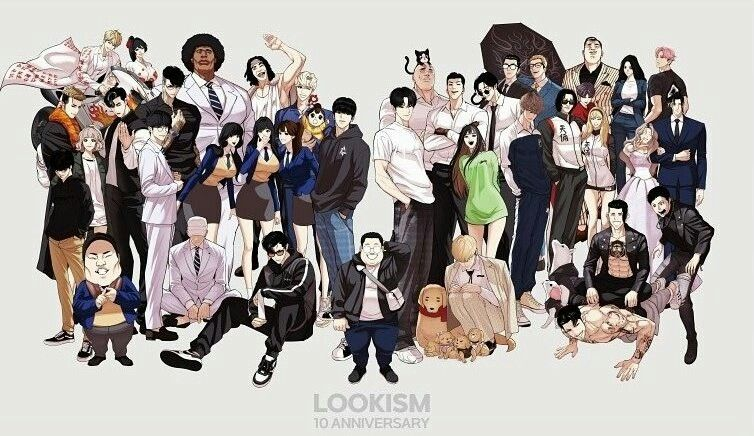

Comedy, Crime drama, Supernatural
Park Hyung Seok is an unpopular and bullied high school student who is looked down on by his fellow students for his obesity. Bullied and harassed every day by a delinquent, he takes out his anger verbally on his mother and asks for a school transfer. Resolving to run away from his problems and start anew, he moves to Seoul and plans to attend a new high school. A few nights before he begins school, however, he receives a new body that is tall, muscular, and handsome. When one body is in use, the other falls asleep; he can switch bodies by waking up the sleeping one.